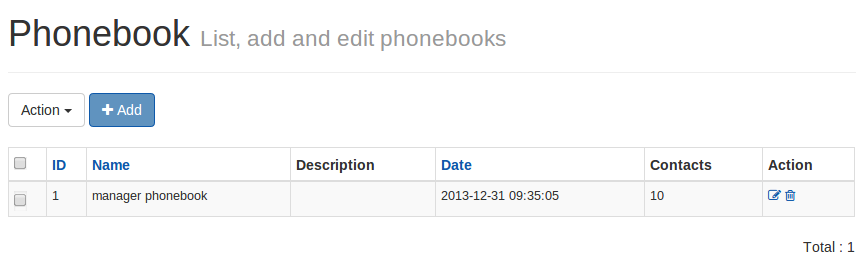
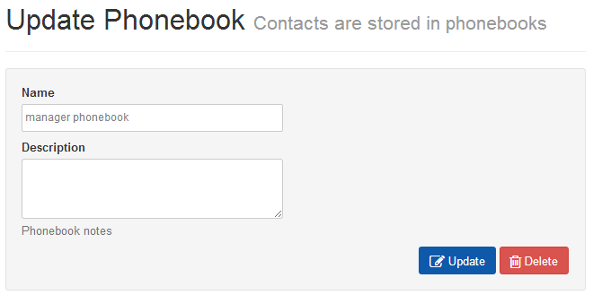
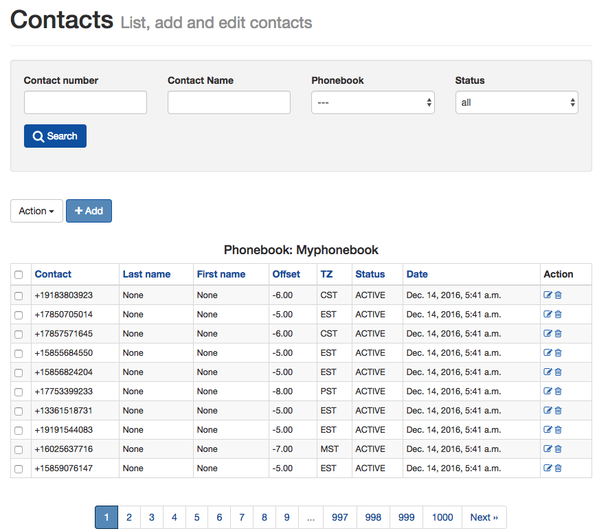
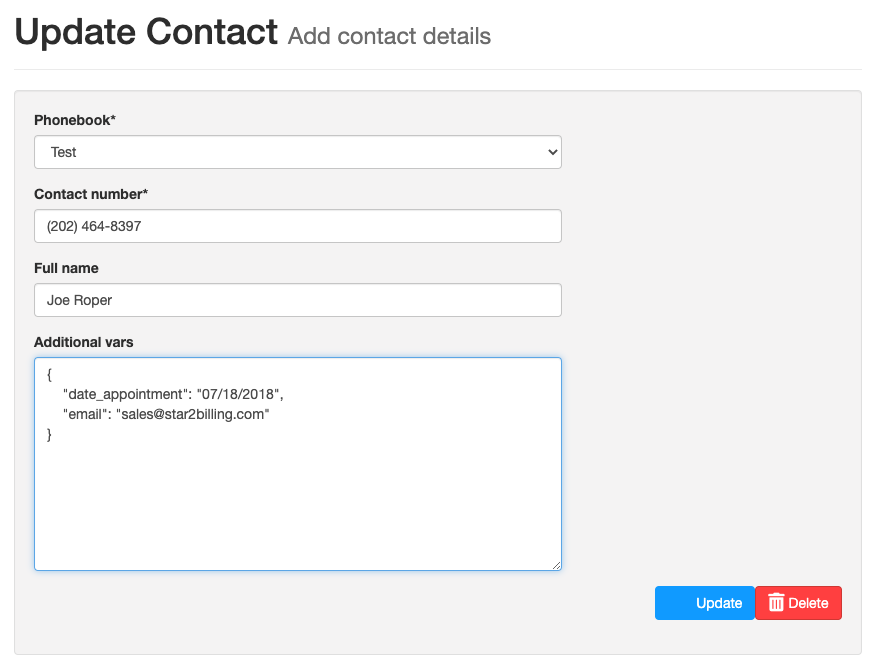
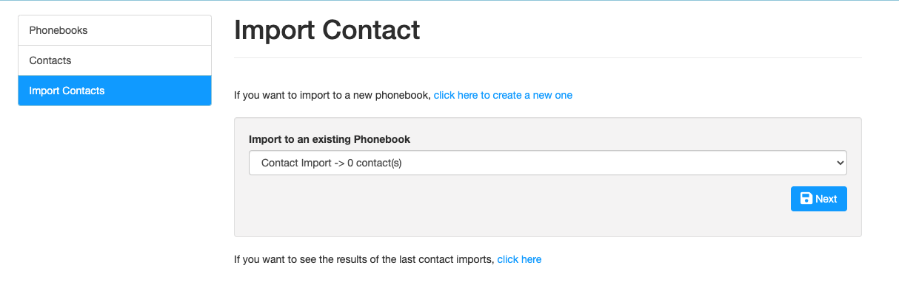
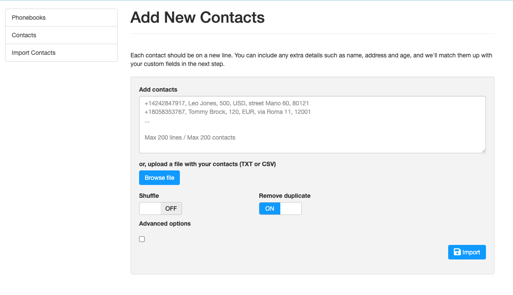
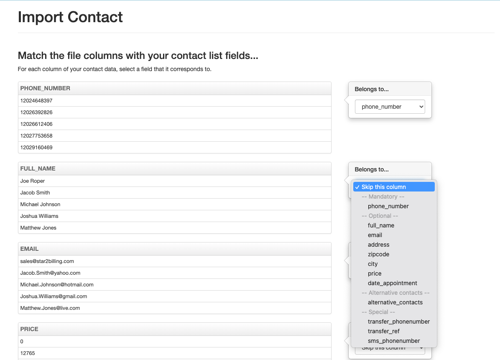

Contacts¶
Phonebook¶
The phonebook list will be displayed from the following URL. You can add a new phonebook by clicking Add phonebook and add the name of a phonebook and its description. Also from the phonebook list, click on the phonebook to update.
URL:

{kind=link}
To Add/Update a Phonebook for a logged in user
URL:

Contact¶
The contact list will be displayed from following the URL. You can add a new contact by clicking Add contact & adding the contact details (i.e. phone number, name, description, contact status) under the logged in user’s phonebook from the phonebook list. On the contact list, click on the contact to update.
NB: the phone number needs to be in full international format, that is to say, +12024648397 for a USA number rather than 12024648397, or 2024648397. If numbers are entered in national format, then the + and country prefix will automatically be pre-pended according to the country set during installation. This also applies to imported numbers.
URL:

To Add/Update a contact in a phonebook
URL:

The contact can contain extra custom data in the Additional Parameters field. This is JSON formatted data that can be used for tag replacement in the survey when using TTS, e.g.
{"age": "32"}
When {age} is used in the TTS script in a survey node, it will read out 32 instead.
There are some special variables which have certain functions. These are described in the documentation.
Import Contacts¶
To import bulk contacts into a phonebook, click on Import Contacts where you can upload contacts via a CSV (Comma Separated Values) text file under a logged in user’s phonebook.
At its most simple, the data in the CSV file to be imported can simply be a list of numbers with no additional fields:
+14242891477
+19255232463
+18058376573
+18058586048
More complext CSV files with multiple columns can be easily imported. The CSV file can be in any format and any number of predefined fields can be imported.
Go to the Import Contacts screen:
URL:

{kind=link}
Select Phonebook¶
You will see a screen where you can select the phonebook you want to put your contacts in.
Click the Next Button
{kind=link}
Import¶
You can now browse for your CSV file to import. If you have headings at the top of your CSV file, it’s best to switch off the ‘Shuffle’ so that these headings appear in the import screen.
‘Remove Duplicates’ will only remove duplicates from the file you are importing, it will not prevent duplicates being imported of numbers that are already in the phonebook.
Advanced Options allows you to change the delimiter from a comma to whatever delimiter you have used in your CSV text file. Numbers that are not in the correct format can be transformed on input by clicking Advanced Options which allows you to add and remove a prefix, e.g. remove a leading 0 and replace with +44.
When done, click import.
{kind=link}
Assign Data Fields¶
On import the system will try to identify the phone number field; check this is correct. For each column of data, select the field purtaining to the column of data. If you require more fields that are not in the drop-down, the Dialer Administrator can add more.
Import Progress¶
The data will now import. A progress bar will display on screen. Depending on the size of the import file, this could take a few minutes. At the end, records that have been rejected will be displayed. Records might be rejected because the phone number is in the wrong format or the number is present in the Global DNC list.
Alternative Numbers¶
Useful in debt collection, alternative numbers can be imported, so once the primary number has been dialled, the alternative numbers can also be called until the survey is marked ‘Completed’ and the contact has done the action you specified. At that point calls on the contact’s numbers will stop.
Additional parameters (JSON)¶
In contacts, under advanced data, it is possible to add custom values which can be played as TTS simply by enclosing them in {curly brackets} in the following form:
{"age": "32"}
If {age} is placed into the TTS, 32 will be the value read out. Multiple JSON formatted values can be added into this field.
On CSV file import, the columns imported will be properly JSON formatted automatically.
Special Function Additional parameters keywords (JSON)¶
Some special function keywords can be imported that change the usual behaviour of the system. These are:
transfer_phonenumber - the value of the transfer phone number overwrites the SIP URI / Phone number in the call transfer node. If you don’t want the transfer number overwritten by {transfer_number}, then prefix the transfer number with !! in the transfer section, for instance !!12024648397
transfer_ref - this means that a SIP header “P-Contact-Transfer-Ref” is added on transfer, which may be used to trigger a screen pop or otherwise identify the contact transferred at your IP-PBX.
sms_phonenumber - when the SMS node is used, rather than sending the SMS to the contact’s number, it can be sent to a different number, e.g. the contact’s cellphone number, if this keyword is used.
overwrite_callerid_num - This CallerID Number is used in preference to the callerID number set in the campaign. X can be included in the callerID and will be replaced by a random number from 0 to 9.
overwrite_callerid_name - The callerID Name is used instead of the callerID Name set in the campaign.
Failed Imports¶
If your import fails, there are a few things to check:-
- Open the file in text editor and make sure it looks right with no gaps and each record on a separate line.
- Check you have no extra commas in the text when you are using comma as the separator. Check address columns in particular.